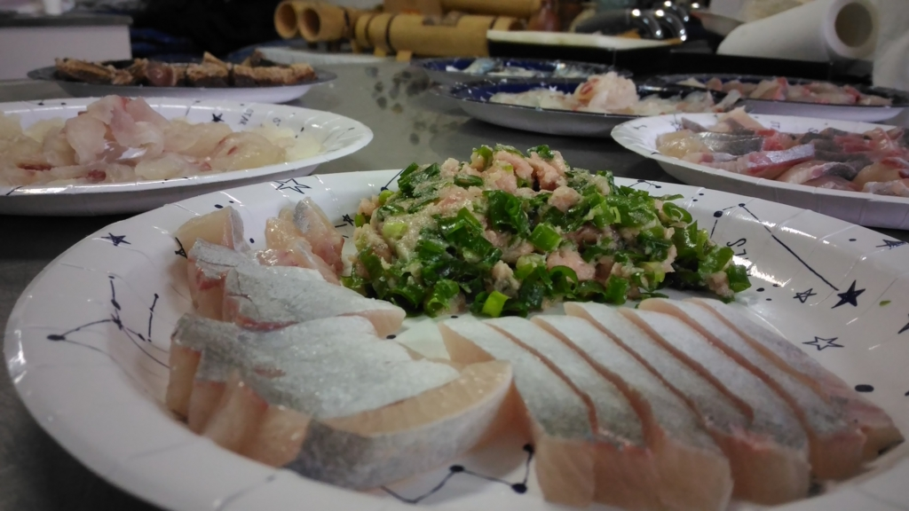
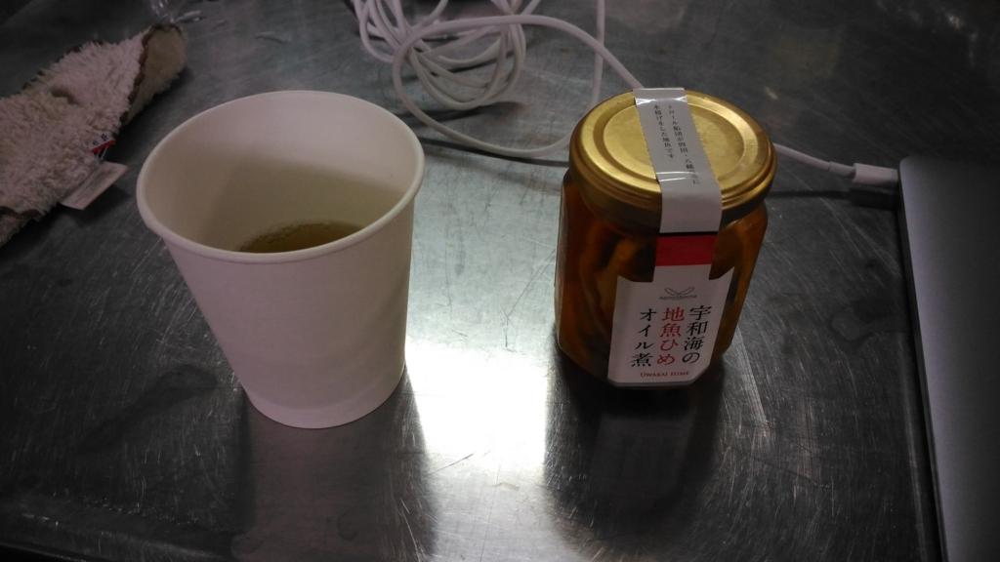
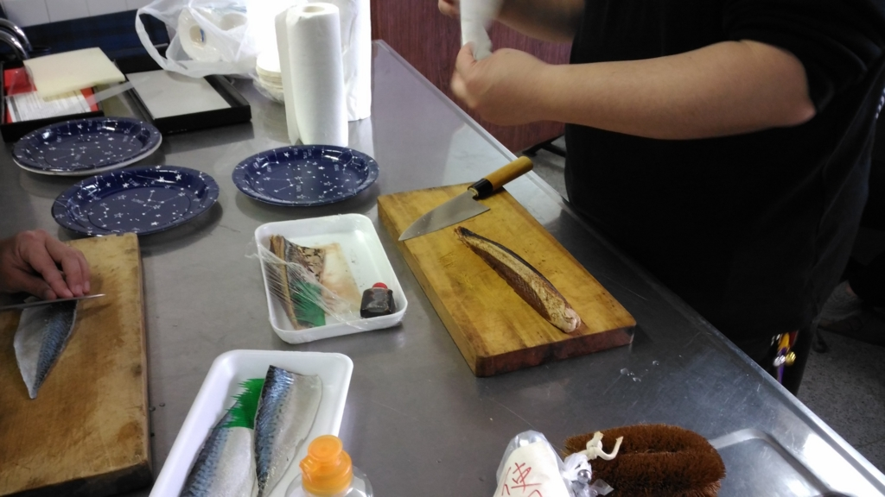
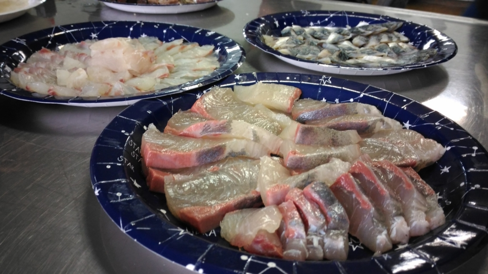
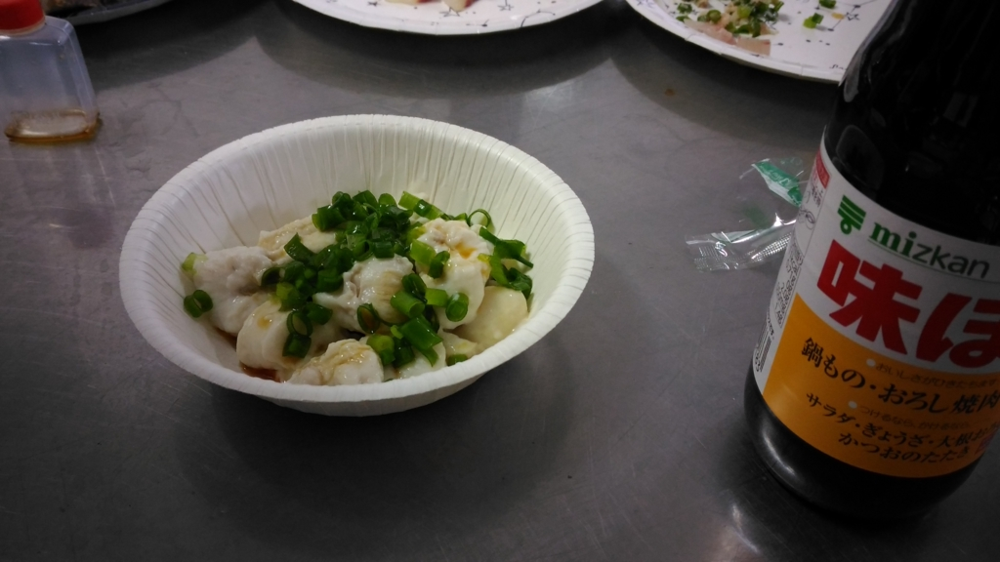
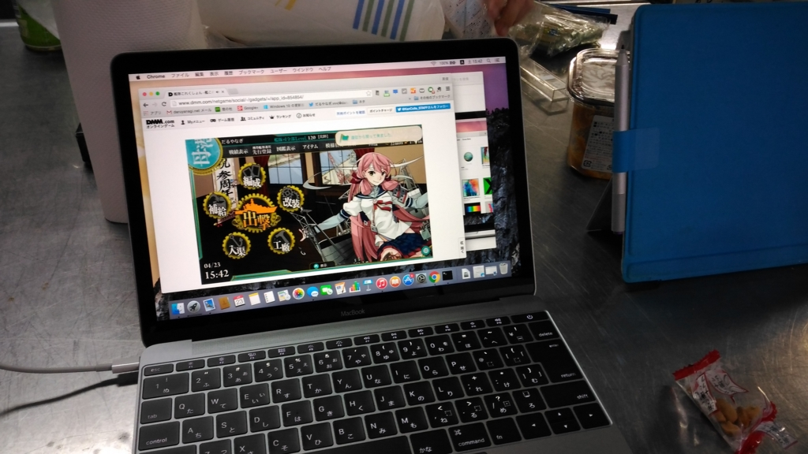

ゆるふわ.rb in 大洲 〜Rails 5 の新機能を探せ！〜 に参加してきました。
公開日：

先週の土曜日は、ゆるふわ.rb に参加。お刺身食べてきました！
残念ながら今回が最後かもしれないということで、いつもより多くの人が集まったのかな？ みんなで Rails 5 の新しいところをサラッと学んで、それ以外の新機能をググって探してみるという感じでお勉強。

（ウェルカムドリンクのあおさ汁（あおさが見えないけど！）と、お誕生日プレゼントにいただいた「宇和海の地魚ひめオイル煮」。）
自分はチャチャっと「Ruby on Rails API っていうのがあるらしいで（知らんけど」と報告して済まし、ビールにありつきました。
実は、それ以外のネタとして Windows Insider Preview の環境で Rails を動かしてみようと個人的に四苦八苦していたのですが、どうやら apt-get ですんなりインストールできるのが Ruby 1.9 のようで、Rails 5 を入れるのは大変めんどくさそうでした。もうちょっと頑張ってみてもよかったのだけど、お刺身が早く食べたかったので、「Bash あるから Rails 環境の構築も簡単だぜ！」というわけにはいかないらしいという学びだけ得て、ここはおとなしく引き下がることにします。いやー、Ruby とか Rails とか触るのなんて、2.0 のとき以来だわ。

今回はヒトが多かったのもあって、お魚も多彩。とくに鯛の白子が超美味で、大変満足でした。

あと、大洲に来る途中に寄った エディオン で購入した Macbook の開封式と艦これをプレイするための環境設定もやりました。Mac の操作方法が全然わからなくてだいぶ困ったのですが、皆さんのおかげでかなり助かりました（Spotlight をホットキーで呼び出す方法とか！）。ありがとうございます。
追記
ゆるふわの後継になるかはわかんないけど、こういうゆるい集まりは松山でもやりたいですねー。まずは刺身包丁を買わねば。